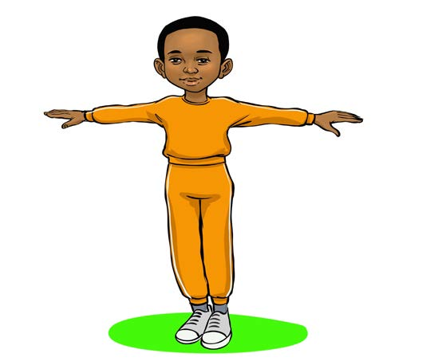
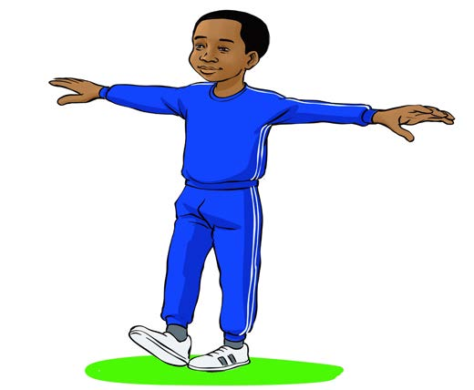

1. Spread your arms to balance the body.

Figure 2: A pupil standing upright and spreading her arms
2. Place your right heel in front of the big toe of your left foot.

Figure 3: A pupil starting walking with his right leg